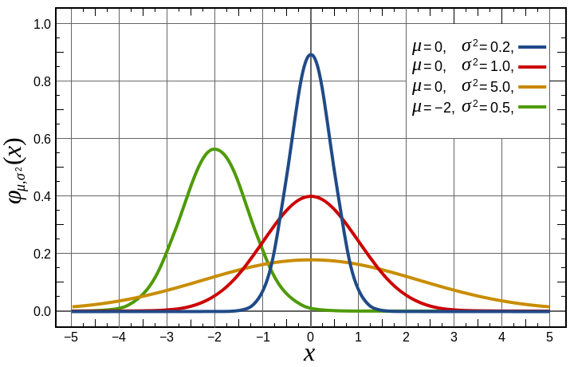
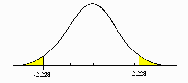

Background Statistics
Kevin’s PSPE Resources
This chapter is about the very building blocks of statistics. We start off with a discussion over probability, random variables, and distributions. Then, we talk about the basics of statistical inference and hypothesis testing. We conclude by discussing correlations between variables and the basics of regression.
Use the right sidebar to navigate quickly.
Random Variables
Random Variables and Distributions
Random variables are outcomes that have some randomness/uncertainty. There is a set of possible outcomes \(\Omega\), called the sample space. Within the sample space there exists events \(\omega \in \Omega\) (potential outcomes). We do not know which event will be observed, but we know each outcome \(\omega\)’s probability of realisation \(\P(\omega \in \Omega)\).
We can represent \(\omega \in \Omega\), and the associated probabilities with each outcome \(\P(\omega)\), in a distribution. On the horizontal axis is all \(\omega \in \Omega\), and the vertical axis is \(\P(\omega)\).

Continuous random variables \(\omega \in [a, b]\) can take any possible value within a range \(a\) to \(b\), including any decimal. Discrete random variables can only take a certain set of values \(\omega \in \{a, b, \dots \}\), not any possible decimal. For example, a dice roll can only take the values of 1, 2, 3,…, and not 3.23478. A discrete random variable with only 2 potential outcomes \(\omega \in \{0, 1 \}\) is a binary random variable.
We will denote random variables with a capital letter (ex. \(Z\), \(X\)). In later chapters, we will denote them with a subscript \(Z_i, X_i\) to distinguish them from matrices. The realisation of a random variable (the outcome) is denoted with lower case letters (ex. \(z, x\)).
Probability Density Functions
We can describe these distributions mathematically. A probability density function is a function \(\varphi\) that takes one potential outcome as an input, and spits out the probability of that outcome. For example, the probability density function of a dice \(z \in \{ 1, 2, 3, 4, 5, 6\}\) is:
\[ \P(z) = \varphi(z) = 1/6 \]
We can see that if we want to see the probability of getting a 5 on our dice roll, we plug in \(z=5\) to get \(\varphi(5) = 1/6\), which is the probability of rolling a 5.
For continuous random variables, it does not make sense to calculate the probability of one specific outcome \(z\). For example, let us say your random variable is the time it will take you to get to school tomorrow. We really do not care about the probability of taking 13.4357 minutes to get to school. What we do care about is a range - lets say the probability of getting to school between 13 and 14 minutes.
More mathematically, the probability density function of a continuous random variable gives you the probability of an outcome between \(a\) and \(b\):
\[ \P(a<z<b) =\int\limits_a^b \varphi(z)dz \]
This integral is important - it tells us that the area under a distribution gives us the probability of an event.

Cumulative density functions measure the cumulative probability below a certain point.
For example, to get the probability of anything below \(a\) occurring as an outcome, our cumulative density function is:
\[ \P(z<a) = \int\limits_{-∞}^a \varphi(z)dz \]
This will be useful in some cases to calculate values for probability density functions.
Expectation and Variance
The expectation, also called the mean or expected value, is the “average” outcome value that you would expect to get from the distribution. It is essentially our “best guess” of what the random variable’s outcome would be.
Expectation for a discrete random variable \(X\) is calculated as a weighted sum of all potential outcomes \(x_i\) and their respective probabilities given by the probability density function \(p(x_i)\):
\[ \E Z = \sum\limits_{i=1}^n(z_i \times \varphi(z_i)) \]
For a continuous random variable \(X\), the idea is the same but with an integral:
\[ \E Z = \int\limits_{-∞}^∞ (z \times \varphi(z))dz \]
Expectations have a few unique algebraic properties:
- The expectation of a constant is itself: \(\E c = c\).
- Expectations can be added: \(\E(X+Y) = \E X + \E Y\).
- Expectations multiplied with constants: \(\E(cX) = c \cdot \E X\).
- Law of iterated expectations: \(\E(X) = \E[\E(X|Y)]\).
Variance measures the spread of a distribution. It is essentially the average distance of each individual outcome from the expected value \(\mu\) of the random variable:
\[ \V Z = \sigma^2= \E(z - \E Z)^2 \]
The standard deviation \(\sigma\) is simply the square root of variance.
Conditional Distributions
Let us say we have two random variables \(X\) and \(Y\), each with their own respective distributions.
Often in statistics, we are interested in how two variables interact with each other. For example, we are interested in how democracy affects economic growth. Or how education affects income.
Conditional distributions are a distribution of one random variable \(X\), given we hold another variable \(Y\) fixed at some value.
For example, imagine \(X\) is income and \(Y\) is age. The conditional distribution of \(X|Y\) is the distribution of income \(X\) at every specific age \(Y\). For example, \(X|Y = 20\) is the distribution of income \(X\) for 20 year olds. \(X|Y=60\) would be the distribution of income \(X\) for 60 year olds.
Conditional distributions have all the same properties as normal distributions. The most important of these is the conditional expectation, which we denotate \(\E(X|Y)\). In the context of above, \(\E(X|Y=20)\) would be the expected income for a 20 year old.
The reason conditional expectations are so important is because they illustrate how one variable affects another. If we see a pattern in going between \(\E(X|Y=20)\), \(\E(X|Y = 21)\), and \(\E(X|Y = 24)\), we might be tempted to say that increasing age \(Y\) has some effect on income \(X\).
Distributions
The Normal Distribution
The normal distribution is for continuous random variables, and takes a famous “bell shape” (hence why it is also called the bell curve). Every normal distribution and its probability density function (PDF) can be defined by two parameters: the mean and the variance:
\[ Z \sim \mathcal N(\mu, \sigma^2), \quad \P(a<z<b) = \int\limits_a^b \frac{1}{\sqrt{2\pi\sigma^2}}e^{\left( -\frac{(z - \E Z)^2}{2 \sigma^2}\right)}dx \]
Where \(\mathcal N\) represents the normal distribution, \(\mu\) represents the expected value \(\E Z\) of the distribution, and \(\sigma^2\) represents the variance. \(Z\) is the variable we have assigned the normal distribution to. The figure below shows how normal distributions change when you alter \(\mu\) and \(\sigma^2\).

Properties of the Normal Distribution
Normal Distributions have a unique property - within any standard deviations \(\sigma\) from the mean, every single normal distribution contains the same amount of area under the curve (which is also the probability):

These properties don’t just apply to 1, 2, or 3 standard deviations away from the mean. They apply to any amount of standard deviations (such as 1.23478 standard deviations), and there are online tables/calculators that can derive this. This means that we can find the probability between any two points of a normal distribution, just by knowing the mean \(\mu\) and standard deviation \(\sigma\).
Another property of the normal distribution is that we can manipulate them as follows:
- We can add a constant \(c\) to every single outcome/value in a normal distribution. The resulting distribution will still be a normal distribution, just with its mean shifted by \(c\). Or in other words: \(Z \sim \mathcal N(\mu + c, \sigma^2)\).
- We can multiply by constant \(c\) to every single outcome/value in a normal distribution. The resulting distribution will still be a normal distribution, just with its mean multiplied by \(c\), and its standard deviation multipled by \(c^2\). Or in other words: \(Z \sim \mathcal N(c \mu, (c \mu)^2)\).
The Standard Normal Distribution
The standard normal distribution (often called the \(Z\)-distribution) is a special version of the normal distribution, with a mean of 0 and a variance of 1:
\[ Z \sim\mathcal N(0, 1), \quad \P(a<z<b) = \int\limits_a^b \frac{e^{-\frac{z^2}{2}}}{\sqrt{2\pi}}dz = \int\limits_a^b\phi(z)dz \]
Note: we denote the PDF of the standard normal as \(\phi\), and the CDF of the standard normal as \(\Phi\).

The best part about the standard normal distribution is that we can transform any other normal distribution into a standard normal. Recall the properties of adding and multiplying constants to a normal distribution from above. That means we can apply a transformation to every value/unit in a normal distribution \(X\) to get a standard normal distribution \(Z\):
\[ \text{if } X \sim \mathcal N(\mu, \sigma^2), \quad Z = \frac{x - \E X}{\sigma} \sim \mathcal N(0,1) \]
Or in other words, for every value of \(x \in X\), subtract the mean, then divide by the standard deviation. If you do this for every value \(x \in X\), you will get a standard normal.
The T-Distribution
The T-distribution looks very similar to that of the normal distribution, with the same bell curve shape. However, the t-distribution’s tails are slightly fatter than the normal distribution, and the peak is slightly shorter.

The key difference between the t-distribution and the normal distribution is the parameters. Unlike the normal distribution, which has 2 parameters, the t-distribution has only one parameter: degrees of freedom.
The t-distribution is always centered on 0. Higher degrees of freedom means less thick tails. As degrees of freedom get larger (past 30), it almost perfectly fits a normal distribution.
The importance of the T-distribution is that it is often used for statistical inference when the normal distribution, for whatever reason, cannot be used. This is often because with the normal distribution, we need to know variance \(\sigma^2\), but we do not need to know this to use the T-distribution.
Bernoulli and Binomial Distribution
A bernoulli trial is an experiment that has two possible outcomes: a success \(z= 1\) and a failure \(z = 0\). We denote the probability of a success as \(p\), and the probability of a failure as \(q = 1-p\). For example, a coin flip could be seen as a bernoulli trial, with \(p = 0.5\).
For example, below is a bernoulli distribution with \(p = 0.15\):

The probability density function of a bernoulli distribution is:
\[ \varphi(z) = \begin{cases} p \quad \text{if } z = 1 \\ 1 - p \quad \text{if } z= 0 \end{cases} \]
The expected value of the bernoulli trial is equal to the probability of a a success \(p\).
\[ \E Z = \P (z = 1) = p \]
The bernoulli distribution is a special case of the Binomial distribution, which is basically the question of how many success you will get with \(n\) number of trials. When \(n=1\) (just one coin flip), we get the bernoulli distribution.
A bernoulli distribution is often employed in randomisation of treatment during experiments, as we will see later.
Estimators and Statistical Inference
Estimators and Sampling Distributions
An estimand is the true value of some true parameter \(\theta\) in the population we are trying to measure.
We often do not have data on the population. We typically have a sample from the population, and use an estimator (procedure) to produce a sample estimate \(\hat\theta\). Estimators and estimates are denoted with either a hat \(\hat\theta\) or tilde \(\tilde\theta\).
- For example, if we wanted to find the average trust in institutions in the UK, we cannot possibly ask 70 million people. So, instead, we take a sample from the population, and produce a sample estimate.
However, because of sampling variability (not all random samples will be identical), each sample \(n\) will have a different estimate \(\hat\theta_n\).
Imagine if we keep taking \(N\) number of samples, we will have \(N\) number of estimates \(\hat\theta_1, \hat\theta_2, \dots, \hat\theta_N\). Thus, any specific estimate \(\theta_n\) from sample \(n\) can be thought of as a random draw from the sampling distribution \(\hat\theta_1, \hat\theta_2, \dots, \hat\theta_N\).
Let us say we want to find the mean salary of all individuals in the UK. The true value of the mean salary for every individual is \(\theta\).
However, asking all 60 million people is nearly impossible. So, we take a randomly sample of 1000 individuals, and then find the sample mean. Our estimator is thus the sample mean estimator.
Our first sample of 1000 individuals yields an estimate \(\hat\theta_1\). If we take another sample, we will get slightly different people in this sample, and get another estimate \(\hat\theta_2\). We keep taking samples, and get more and more estimates \(\hat\theta_3, \hat\theta_4, \dots, \hat\theta_n\).
We plot all of these samples into a distribution as follows:

This indicates the potential estimates we can get. If we were to conduct only one sample, we would essentially be selecting a random \(\hat\theta_i\) value from this distribution.
The sampling distribution of an estimator is the key property of estimators. The two parameters of interest from this sampling distribution are its expectation and variance.
We can describe sampling distributions with their expectation and variance.
Finite Sample Properties of Estimators
An estimator of a parameter is unbiased, if its estimates \(\hat\theta_n\) have an expectation equal to the true population value of the parameter: \(\E \hat\theta_n = \theta\). Or in other words, if we repeatedly sample and use the estimator, on average, the estimates will be equal to the true population value (the sampling distribution will have an expectation of the true population value).
We want an unbiased estimator, because if \(\E \hat\theta_n = \theta\), that means our “best guess” of the estimator value is the true parameter value \(\theta\). That means any one estimate \(\hat\theta_n\) is on average, correct.
Unbiasedness is not the only desirable property of estimators - we also care about the variance. After all, if we have two unbiased estimators, the one with less variance will be on average, closer to the true population value, for any one estimate \(\hat\theta\).
For example, let us say the true population parameter is \(\theta = 0\). We will have two estimators: estimator \(A\) and estimator \(B\):
- Estimator \(A\), after two samples (for simplicity), produces estimates -1 and 1.
- Estimator \(B\), after two samples, produces estimates -100 and 100.
Both estimators are unbiased \(\E \hat\theta_n = 0\). However, clearly, estimator \(A\) is, on average, closer to \(\theta =0\) than estimator \(B\). This is because while both estimators are unbiased, estimator \(A\) has a smaller variance than estimator \(B\) - that is on average, estimator \(A\)’s estimators are more closely “packed around” the expectation of the estimator.
The variance of an estimator (and variance of the sampling distribution) can be quantified as:
\[ \V \hat\theta_n = \E[(\hat\theta_n - \E \hat\theta_n)^2] \]
An efficient estimator is one that, on average, has the closest estimated value \(\hat\theta_n\) to the true population parameter. If two estimators are both unbiased, the one with lower variance is more efficient. Efficiency can be quantified as the estimator with the lowest mean squared error:
\[ \mathrm{MSE}(\hat\theta_n) = \E[(\hat\theta_n - \theta)^2] =\V \hat\theta_n + \underbrace{(\E \theta_n - \theta)}_{\mathrm{bias}} \]
We generally want an efficient estimator, since gives us the closest guess to the true population parameter \(\theta\).
Interestingly, it is possible for a biased estimator to be more efficient than an unbiased estimator.
This is particularly the case when the biased estimator has a slight bias but small variance, while the unbiased estimator has a giant variance. In this case, the biased estimator is producing estimates \(\hat\theta\) that on average, are closer to the true population parameter \(\theta\).
Asymptotic Properties of Estimators
Asymptotic properties are properties of estimators as the sample size \(n\) approaches infinity.
An estimator is asymptotically consistent, if as we increase sample size towards infinity, the estimate will become more and more concentrated around the true population value \(\theta\). At \(n = ∞\), our sampling distribution collapses to just one value, the true population value \(\theta\). Mathematically:
\[ \P(|\hat\theta_n - \theta|> \varepsilon) \rightarrow 0, \text { as } n \rightarrow ∞ \]
That means with a consistent estimator, increasing the sample size will get us more and more accurate results.
An estimator can be both biased, but consistent. In smaller sample sizes, the estimator might not be on average correct, but over a large enough sample size, it will become “unbiased”.
For example, in the figure below, we can see that this estimator is biased at small values of \(n\), but as \(n\) increases, it becomes more consistent, collapsing its distribution around the true \(\theta\).

The law of large numbers states that the sample average of a random sample, is a consistent estimator of the population mean.
For example, let us say we have a random variable \(x\). We take a random sample of \(n\) units, so our sample is \((x_1, \dots, x_n)\).
- Let us define \(\bar x_n\) as our sample average.
- Let us define \(\mu\) as the true population mean of variable \(x\).
The law of large numbers states that:
\[ plim( \bar x_n) = \mu \]
- Where \(plim\) states that as \(n\) approaches infinity, the probability distribution of \(\bar x_n\) collapses around \(\mu\).
Why is this the case? This sample mean estimator is calculated simply through the formula for mean:
\[ \bar x_n = \frac{1}{n}\sum\limits_{i=1}^n x_i \]
Let us define the variance of our sample of \(x_1, \dots, x_n\) as \(Var(x_i) = \sigma^2\). We can now find the variance of our sampling distribution of estimator \(\bar x_n\):
\[ \begin{split} Var(\bar x_n) & = Var\left( \frac{1}{n}\sum\limits_{i=1}^n x_i \right) \\ & = \frac{1}{n^2} Var \left(\sum\limits_{i=1}^n x_i\right) \\ & = \frac{1}{n^2} \sum\limits_{i=1}^n Var(x_i) \\ & = \frac{1}{n^2} \sigma^2 \\ & = \frac{\sigma^2}{n} \end{split} \]
And as sample size \(n\) increases to infinity, we get:
\[ \lim\limits_{n \rightarrow ∞} Var(\bar x_n) = \lim\limits_{n \rightarrow ∞} \frac{\sigma^2}{n} = 0 \]
Thus, the variance of our estimator \(\bar x_n\) shrinks to zero, so as sample size increases to infinity \(n\), the sampling distribution of estimator \(\bar x_n\) collapses around the true population mean.
Another asymptotic property of estimators, as sample size \(n\) approaches infinity, is that the sampling distribution approaches a normal distribution. The central limit theorem establishes asymptotic normality of estimators. Let us say we have \(N\) number of random variables \(\hat\theta_1, \dots, \hat\theta_N\) (estimates are realisations of random variables). The central limit theorem states that:
\[ P(z_n < w) \rightarrow \Phi(z) \quad \text{as } n \rightarrow ∞ \]
- Where \(z_n\) is a transformed version of the random variable \(\hat\theta_n\), defined as \(z_n = \frac{\bar\theta_n - \E \hat\theta_n}{\sigma / \sqrt{n}}\).
- Where \(\P(z_n < z)\) is the cumulative density function of the random variable \(w_n\).
- Where \(\Phi(z)\) is the cumulative density function (cdf) of the standard normal distribution \(\mathcal N(0, 1)\).
The importance of CLM comes from the fact that as we increase sample size, our sampling distribution becomes more and more normally distributed. Recall that we know that the normal distribution has unique properties of distribution that allow us to calculate the probability between standard deviations (and any point). Since CLM says that our sampling distribution is normally distributed, we can apply the same properties to learn about the probabilities of getting a certain sample estimates \(\hat\theta_n\).
Intuition of Hypothesis Testing
We have status-quo theory, called the null hypothesis \(H_0\). A status quo theory is the generally accepted value of the true population parameter \(\theta\) in our field. However, you might want to prove this status-quo theory wrong, and have an alternative hypothesis \(H_1\). You need some way to prove that the status-quo null hypothesis is wrong.
Let us say we are interested in measuring the relationship between democracy and economic growth.
The status-quo theory is that there is no relationship - since we need to prove there is a relationship. Thus, our null hypothesis is \(H_0 : \theta = 0\) (0 representing 0 relationship).
Our alternative hypothesis might be \(H_1: \theta ≠ 0\) - i.e. there is a relationship between democracy and economic growth.
To prove our alternative hypothesis, we need to disprove the null hypothesis.
We cannot know if the null hypothesis is wrong. However, we can calculate the probability of getting a certain sample estimate \(\hat\theta_n\) assuming the null hypothesis is true. If we assume an unbiased estimator, that means our hypothetical sampling distribution should have an expected value of our null hypothesis: \(\E \hat\theta_n = H_0\).
Then, we can gather a sample, and calculate some sample estimate \(\hat\theta\). Using some math (we will see this later with regression), we can also estimate the variance of the sampling distribution.
Thus, we now know the expectation of the sampling distribution \(\E \hat\theta_n = H_0\) and the variance. We also know that the sampling distribution is normally distributed by the central limit theorem. Thus, using the properties of the normal distribution, we can calculate the probability of getting our sample estimate \(\hat\theta\) or an estimate even further from the \(H_0\) than our \(\hat\theta\).

For example, above, our sample estimate \(\hat\theta = -2.228\), and our null hypothesis is \(\theta = 0\). The yellow parts highlighted are the probability of getting an sample estimate \(\hat\theta_n\) as extreme or more extreme than our \(\hat\theta = -2.228\).
If this probability of getting our estimate \(\hat\theta\) or more extreme is very small (less than 5% typically), we can believe either one of two things:
- We got extremely lucky (less than 5% chance) and got a estimate very far from the null hypothesis.
- Or, we typically believe that we were not actually lucky, but instead, the null hypothesis value of \(\theta\) is incorrect.
Thus, conclusion 2 essentially means we reject the null hypothesis, and conclude our alternative hypothesis.
Mechanics of Hypothesis Testing
To start a hypothesis test, you will need to define a status-quo null hypothesis \(H_0\) and an alternative hypothesis \(H_1\).
Then, you should take a sample from the population, and compute a sample estimate \(\hat\theta\) with your estimator. You can then derive a standard error (square root of the variance of the sampling distribution \(\V \hat\theta_n\)). This standard error formula will differ depending on the statistical model, and we will introduce several of these for regression.
Then, you can compute a test statistic. The name of the test-statistic will differ based on the statistical model, but the formula is always the same:
\[ \text{test statistic} = \frac{\hat\theta - H_0}{\text{standard error of } \hat\theta} \]
This formula might look familiar - we are essentially turning our normal distribution of the estimator into the standard normal distribution. The test statistic is essentially measuring how many standard deviations away from the null hypothesis our sample estimate \(\hat\theta\) is.
Now, go onto the x-axis of our standard normal distribution, and start at the mean (at 0). Now, move in both directions by the distance specified by the test statistic. Mark these two points on either side of the mean. Highlight the are under the sampling distribution beyond these points. The figure below shows a test statistic of 2.228:
The highlighted area is the probability (p-value) of getting a sample estimate \(\hat\theta\) equal or more extreme than the one we got, assuming the null hypothesis is true. If the p-value is below 0.05 (5%), we have sufficient evidence to reject the null hypothesis. If the p-value is above 0.05 (5%), we cannot reject the null hypothesis.
Here, we have stated you use the standard normal distribution.
However, with different tests, you might actually use some different distribution. Most often, you will use the t-distribution.
The reason we use the t-distribution is because we often cannot actually calculate the variance of our sampling distribution. Instead, we estimate it with some uncertainty, so the t-distribution accounts for this uncertainty.
Confidence Intervals
Sometimes, we are not just interested in proving a null hypothesis wrong. We often are interested in the actual parameter value of \(\theta\). As we know already, there is variation in our estimates \(\hat\theta_n\) between samples.
Thus to account for this uncertainty, we want to create some range around our sample estimate \(\hat\theta\) that is likely to contain the true value of \(\theta\). This is called a confidence interval.
According the the central limit theorem, we know that any sample estimate \(\hat\theta_n\) is 95% likely to be within 2 standard deviations of the true population value \(\theta\).
Thus, we can construct an interval of 2 standard errors (square deviations) on both sides of our sample estimate \(\hat\theta_n\). This means that 95% of the time, our interval will include the true population value of \(\theta\). Thus, our 95% confidence interval is:
\[ (\hat\theta - 1.96se(\hat\theta), \ \ \hat\theta+1.96se(\hat\theta) \]
- Why 1.96? Because exactly 95% of a normal distribution is within 1.96 standard deviations of the mean.
This interval means that under repeated sampling and estimating \(\hat\theta_n\), 95% of the confidence intervals we construct will include the true population \(\theta\) value.
Nonparametric Bootstrap
Most traditional statistical tests rely on asymptotic normality established by the central limit theorem. However, asymptotic normality can only be satisfied if we have a large enough sample size. When we are dealing with small samples, we cannot invoke central limit theorem.
Nonparametric Bootstrap, instead of assuming some sampling distribution, is a method to simulate the sampling distribution. This is done by re-sampling from the sample with replacement. The procedure is as follows:
- You take the sample you observe (with sample size \(n\)), and randomly re-sample \(n\) observations from that sample with replacement (so allowing observations to repeat in our re-sample).
- Continue to do this over and over again to get \(B\) number of re-samples.
- For each re-sample \(b\), you should calculate the \(\widehat{\theta_b}\). Plot all of the sample \(\widehat{\theta_b}\) in a distribution.
You can also estimate the standard error of \(\hat\theta\) using the standard deviation of the distribution. However, do not use these standard errors for confidence intervals or tests unless you are confident the sampling distribution is approximately normal.
Nonparametric Bootstrap is also used in some more complex estimators where it is very difficult to calculate or estimate the standard errors.
Correlations Between Variables
Correlated Variables
In political science and most social sciences, our primary concern is relationships between variables. How does education correlate with voter turnout? Are less educated citizens more anti-immigrant? How do inflation levels correlate with incumbent popularity?
We describe a relationship between two variables \(X_i\) and \(Y_i\) as a correlation (from now on, all random variables are denoted with a subscript).
- If we are more likely to observe higher values of \(Y_i\) when we also observe higher values of \(X_i\), that means we have a positive correlation.
- If we are more likely to observe lower values of \(Y_i\) when we also observe higher values of \(X_i\), that means we have a negative correlation.
- If the value of \(Y_i\) does not change no matter the value of \(X\), then the two variables are uncorrelated.
Important Note: correlation is not causation! We can view correlations between variables graphically:

Quantifying Correlations
There are two primary ways to quantify correlations between variables. The first is called covariance:
\[ cov(X_i,Y_i) = \E((X_i - \E X_i)(Y_i - \E Y_i)) \\ \]
If covariance is negative, that means we have a negative correlation. If covariance is positive, we have a positive correlation. If covariance is 0, we have no correlation.
However, we cannot interpret the actual number of covariance, only the sign. This is because covariance is sensitive to measurement scale: if we change something measured in feet to inches, covariance increases.
Obviously, we do not want a measure that is affected by measurement scale. We want some measure of correlation that can be compared across different scales. This is where the correlation coefficient comes in:
\[ \rho = \frac{cov(X_i, Y_i)}{\sqrt{\V X \V Y}} \]
Essentially, we are “normalising” the covariance metric by dividing by the variances, which gets rid of the impact of scale.
Correlation coefficients are always between -1 and 1. Values closer to -1 and 1 are stronger correlations, and values closer to 0 are weaker correlations.

We can see here that stronger correlations have points that fit closer to a straight line.
Best-Fit Lines and Magnitude
Correlation coefficients have a huge weakness: they measure the “strength” of correlation, but not the magnitude.

We can see above that these two relationships have the same strength of correlation. However, the slope of the left graph is much higher. Why is the slope important? Well, the slope is essentially how much \(Y_i\) changes when \(X_i\) increases by 1. It is the magnitude of our relationship.
Thus, we might wish to instead look at relationships with a best-fit straight line. Take this figure below:

We can express this line mathematically as \(y = mx + b\), where \(m\) is the slope - the amount \(y\) change for every one unit increase in \(x\). Thus, the slope \(m\) is a measurement of the magnitude of correlation between \(x\) and \(y\).
Simple Linear Regression
Simple Linear Regression is a mathematical model of a best fit line. It takes the following form:
\[ Y_i = \beta_0 + \beta_1X_i + \eps_i \]
- Where \(X_i\) and \(Y_i\) are random variables.
- Where \(\beta_1\) is the slope - the measurement of the relationship between \(x\) and \(y\). \(\beta_0\) is the intercept (y-intercept).
- \(\eps_i\) is the error term: the vertical distance between the actual points and the best-fit line.
We have some special terminology for the parts of the simple linear regression. The independent variable, also called the explanatory variable or the regressor, is labelled \(X_i\). This is the variable multiplied to the slope parameter \(\beta_1\). The dependent variable, also called the response or outcome variable, is labelled \(Y_i\).
We can also write regression as the conditional expectation \(\E(Y_i | X_i)\) of the conditional distribution.
\[ \E(Y_i|X_i) = \beta_0 + \beta_1 X_i \]
Throughout this chapter, we have talked about statistical inference and estimators. This is no different in linear regression. The above equation is what we call our population model (also called the data generating process):
\[ Y_i = \beta_0 + \beta_1X_i + \eps_i \]
However, once again, we cannot know the true population values of our intercept and slope. So, we will have a sample model of the following:
\[ Y_i = \hat\beta_0 + \hat\beta_1X_i + \hat\eps_i \]
We will discuss the details of this estimation process of \(\hat\beta_0, \hat\beta_1, \hat\eps_i\) in the next chapter, and how we can conduct statistical inference and tests. The points on our predicted best-fit line (so excluding error \(\widehat{u_i}\)) are called our fitted values:
\[ \hat Y_i = \hat\beta_0 + \hat\beta_1X_i \]
The simple linear regression model is very simple. In the real world, rarely does only one thing cause another. For example, changes in income could be caused by age, but also education. Instead of just one explanatory variable \(X_i\), we can create regression models with multiple explanatory variables \(X_{i1}, X_{i2}, \dots, X_{ip}\). This is the multiple linear regression that we will introduce in the quantitative methods section.